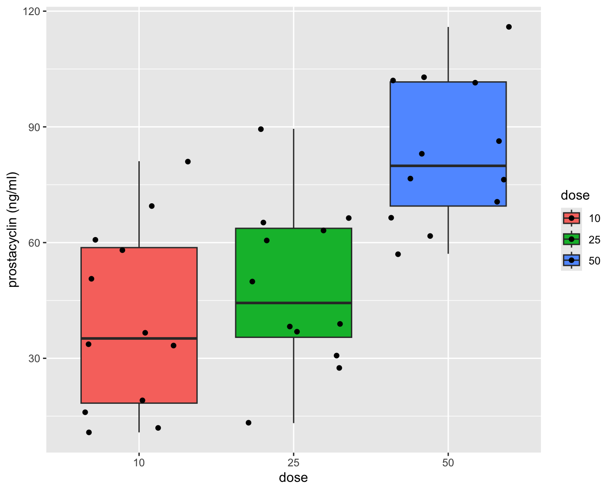
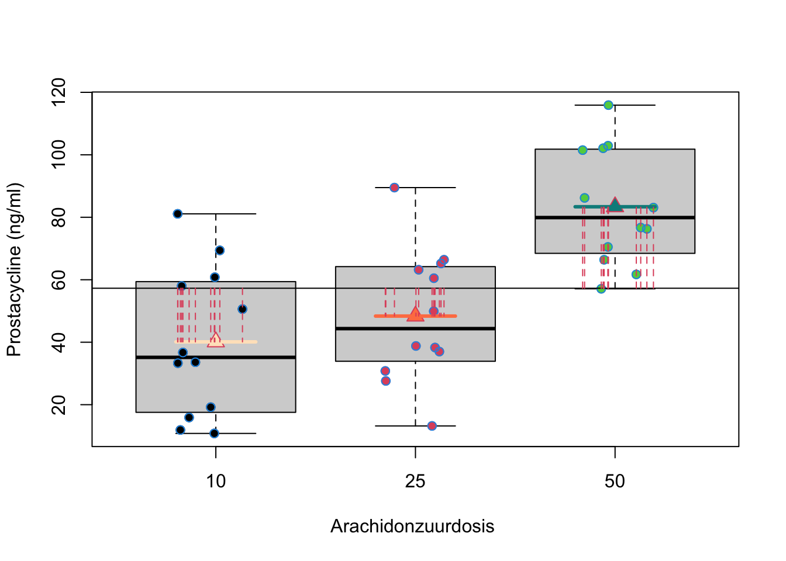
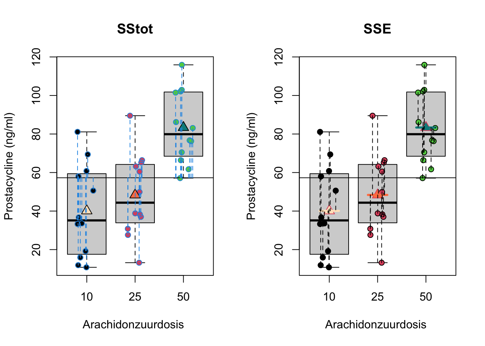
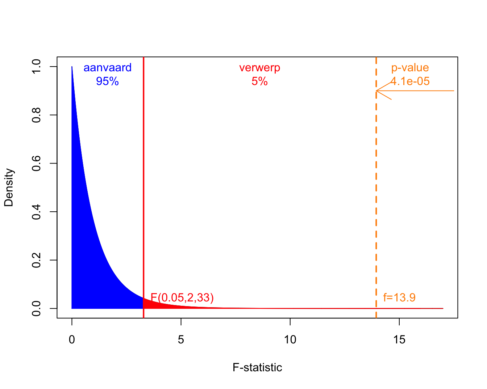
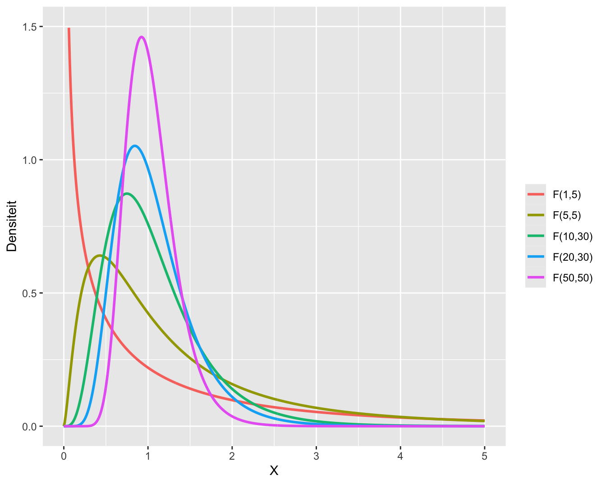
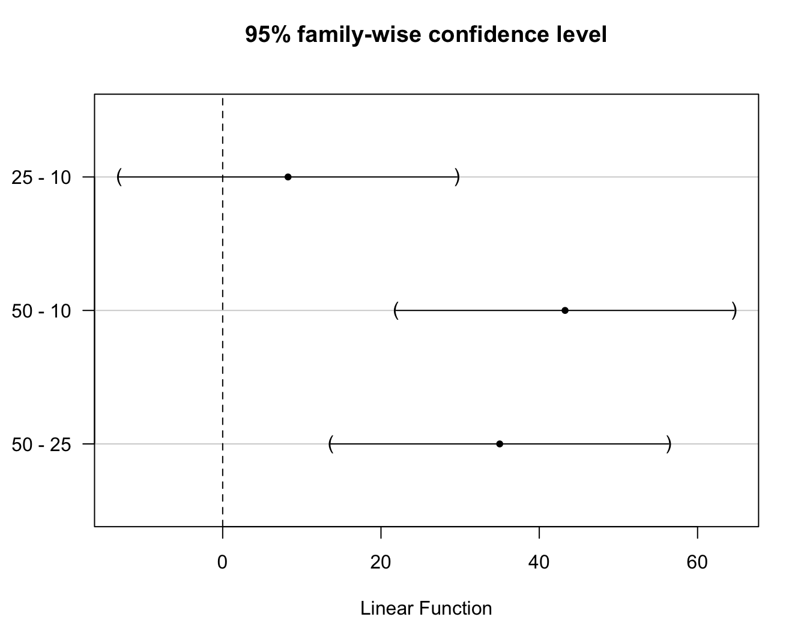

Prostacycline is een lipide die een belangrijke rol speelt in vasodilatatie (bloedvatverwijding) en bloedstolling. Het inhibeert de activatie van bloedplaatjes en vermijdt de vorming van bloedklonters. Arachidonzuur speelt een belangrijke rol in de productieweg van prostacycline. Onderzoekers willen daarom bestuderen of het toedienen van arachidonzuur een effect heeft op het prostacycline niveau in het bloedplasma. Ze zetten hiervoor een proef op waarbij ze het effect van arachidonzuur zullen nagaan op het prostacycline niveau van ratten. Arachidonzuur wordt hierbij toegediend in drie verschillende concentraties (verklarende variabele met drie behandelingen): laag (L, 10 eenheden), gemiddeld (M, 25 eenheden) en een hoge dosis (H, 50 eenheden). Het prostacycline niveau in het bloedplasma wordt gemeten a.d.h.v. een gecalibreerde elisa fluorescentie meting (responsvariabele).
Het experiment is een volledige gerandomiseerd proefopzet, “completely randomized design” CRD. In totaal worden 36 ratten (experimentele eenheden) at random toegekend aan de drie behandelingsgroepen (12 ratten per groep). De data is opgeslagen in een tekst bestand met naam prostacyclin.txt in de folder dataset. Een boxplot en QQ-plots voor de data in elke groep worden weergegeven in Figuur 7.1 en 7.2 respectievelijk.
prostacyclin <-read_tsv("https://raw.githubusercontent.com/statOmics/sbc/master/data/prostacyclin.txt")#dosis wordt als continue covariaat ingelezen#zet om naar een factor.prostacyclin <- prostacyclin |>mutate(dose =as.factor(prostacyclin$dose))head(prostacyclin)
prostacyclin |>ggplot(aes(x = dose, y = prostac, fill = dose)) +geom_boxplot() +geom_point(position ="jitter") +ylab("prostacyclin (ng/ml)")

Figuur 7.1: Data-exploratie van het prostacycline niveau bij 36 ratten die behandeld werden met drie verschillende arachidonzuurconcentraties (12 ratten per behandeling). Boxplots van prostacycline niveau in functie van de dosis.
Figuur 7.2: Data-exploratie van het prostacycline niveau bij 36 ratten die behandeld werden met drie verschillende arachidonzuurconcentraties (12 ratten per behandeling). QQ-plot van prostacycline voor lage, matige en hoge dosisgroep.
Figuur 7.1 geeft weer dat er een effect lijkt te zijn van de arachidonzuurdosis op de hoogte van het prostacycline niveau. In het bijzonder de hoge dosis lijkt het prostacycline niveau in het bloedplasma te laten toenemen.
7.1.2 Model
Op basis van de boxplots in Figuur 7.1 zien we dat de variantie gelijk lijkt te zijn tussen de verschillende behandelingsgroepen. Er is een indicatie dat het gemiddeld prostacycline niveau verschilt tussen de behandelingsgroepen. In het bijzonder voor de hoge dosisgroep H (50 eenheden). Er zijn geen grote verschillen in de interkwartiel range (box-groottes). De QQ-plots in Figuur 7.2 tonen geen grote afwijkingen aan van Normaliteit. De QQ-plot geeft een indicatie dat mogelijks een outlier voorkomt in groep L. Deze wordt echter niet door de boxplots gesignaleerd.
We kunnen dus volgend statistisch model voorop stellen:
met \(j= \text{1, 2, 3}\), respectievelijk de lage, matige en hoge dosisgroep. Hierbij veronderstellen we dus dat de data Normaal verdeeld zijn met een gelijke variantie binnen elk van de \(g=3\) groepen, \(\sigma^2\), maar met een verschillend groepsgemiddelde \(\mu_j\).
De onderzoeksvraag kan nu vertaald worden in termen van het model. De onderzoekers wensen aan te tonen dat het arachidonzuur niveau een effect heeft op de gemiddelde prostacycline concentratie in het bloed.
Dat vertaalt zich in volgende nulhypothese, de arachidonzuurconcentratie heeft geen effect op het gemiddelde prostacycline niveau bij ratten,
\[H_0:\mu_1=\mu_2 = \mu_3\]
en de alternatieve hypothese dat er een effect is van de arachidonzuurconcentratie op het gemiddelde prostacycline niveau bij ratten. Dat betekent dat minstens twee gemiddelden verschillend zijn
Of letterlijk: er bestaat minstens één koppel behandelingsgroepen (j en k) waarvoor het gemiddelde prostacycline niveau \(\mu_j\) verschillend is van dat in groep \(k\), \(\mu_k\).
Een naïeve benadering zou zijn om de nulhypothese op splitsen in partiële hypothesen
\[H_{0jk}: \mu_j=\mu_k \text{ versus } H_{1jk}: \mu_j \neq \mu_k\]
Waarbij de gemiddelden tussen de groepen twee aan twee worden vergeleken. Met deze procedure zouden we elk van deze partiële hypothesen kunnen testen met een two-sample \(t\)-test. Dat zou echter leiden tot een probleem van meervoudig toetsen en een verlies aan power (zie verder). Voor dit voorbeeld zouden we met deze aanpak immers 3 t-testen moeten uitvoeren om de onderzoeksvraag te evalueren.
In dit hoofdstuk zullen we methoden introduceren om \(H_0:\mu_1=\mu_2=\mu_3\) vs \(H_1: \exists j,k \in \{1,\ldots,g\} : \mu_j\neq\mu_k\) te testen met één enkele test. De correcte oplossing voor het testprobleem waarbij we een continue response meten en wensen te detecteren of er een verschil is in gemiddelde response tussen meerdere groepen wordt een variantie-analyse of ANOVA (ANalysis Of VAriance) genoemd.
7.2 Variantie-analyse
We leiden de methode af voor de meest eenvoudige uitbreiding met 3 groepen (prostacycline voorbeeld), maar de veralgemening naar g groepen met \(g>3\) is triviaal.
7.2.1 Model
Zoals bij de t-test kunnen we het probleem ook modelleren a.d.h.v een lineair model door gebruik te maken van dummy variabelen (Sectie 6.10). We zullen hierbij steeds 1 dummy variable minder nodig hebben dan er groepen zijn.
Voor het prostacycline voorbeeld zijn dus twee dummy variabelen nodig en kunnen we de data dus modelleren met onderstaand lineair regressiemodel: Stel dat \(Y_i\) de uitkomst voorstelt van observatie \(i\) (\(i=1,\ldots, n\)), dan beschouwen we
waarbij de error term opnieuw i.i.d.1 normaal verdeeld wordt verondersteld met een constante variantie, \(\epsilon_i\sim N(0,\sigma^2)\), en waarbij de predictoren dummy-variabelen zijn:
\[x_{i1} = \left\{ \begin{array}{ll}
1 & \text{ als observatie $i$ behoort tot middelste dosisgroep (M)} \\
0 & \text{ als observatie $i$ behoort tot een andere dosisgroep} \end{array}\right. .\]
en \[x_{i2} = \left\{ \begin{array}{ll}
1 & \text{ als observatie $i$ behoort tot de hoogste dosisgroep (H)} \\
0 & \text{ als observatie $i$ behoort tot een andere dosisgroep} \end{array}\right. .\]
De lage dosisgroep (L) met \(x_{i1}=x_{i2}=0\) wordt in deze context de referentiegroep genoemd.
Zoals in Sectie 6.10 kunnen we het regressie-model opnieuw herschrijven als een model voor elke groep:
Voor observaties in dosisgroep L wordt het Model 7.1
\[Y_i = \beta_0+\epsilon_i,\]
met \(\epsilon_i \sim N(0,\sigma^2)\).
Voor observaties in dosisgroep M wordt het Model 7.1
\[Y_i = \beta_0+\beta_1 + \epsilon_i,\]
met \(\epsilon_i \sim N(0,\sigma^2)\).
Voor observaties in dosisgroep H wordt het Model 7.1
\[Y_i = \beta_0+\beta_2 + \epsilon_i\]
met \(\epsilon_i \sim N(0,\sigma^2)\).
Hieruit volgt direct de interpretatie van de modelparameters:
De oorspronkelijk nulhypothese \(H_0:\mu_1=\mu_2=\mu_3\) kan equivalent geformuleerd worden als
\[H_0: \beta_1=\beta_2=0.\]
Gezien Model 7.1 een lineair regressiemodel is, kunnen de methoden van lineaire regressie gebruikt worden voor het schatten van de parameters en hun varianties, het opstellen van hypothesetesten en betrouwbaarheidsintervallen. Het testen van \(H_0: \beta_1=\beta_2=0\) gebeurt d.m.v. een \(F\)-test. Hiermee is bijna de volledige oplossing bekomen.
Voor het prostacycline voorbeeld bekomen we het volgende model in het software pakket R:
model1 <-lm(prostac ~ dose, data = prostacyclin)summary(model1)
Call:
lm(formula = prostac ~ dose, data = prostacyclin)
Residuals:
Min 1Q Median 3Q Max
-35.167 -17.117 -4.958 17.927 41.133
Coefficients:
Estimate Std. Error t value Pr(>|t|)
(Intercept) 40.108 6.150 6.521 2.10e-07 ***
dose25 8.258 8.698 0.949 0.349
dose50 43.258 8.698 4.974 1.99e-05 ***
---
Signif. codes: 0 '***' 0.001 '**' 0.01 '*' 0.05 '.' 0.1 ' ' 1
Residual standard error: 21.3 on 33 degrees of freedom
Multiple R-squared: 0.458, Adjusted R-squared: 0.4252
F-statistic: 13.94 on 2 and 33 DF, p-value: 4.081e-05
We zien dat R eveneens de lage klasse (dose10) kiest als referentie-klasse aangezien er enkel een intercept voorkomt en parameters voor dose25 (M) en dose50 (H). De output laat dus onmiddellijk toe om het effect te vergelijken tussen de middelste en laagste dosisgroep en de hoogste en laagste dosisgroep a.d.h.v. twee t-testen.
De volledige nulhypothese \(H_0: \beta_1=\beta_2=0\) kan worden geëvalueerd op basis van de F-test onderaan in de output. De p-waarde van de test geeft aan dat er een extreem significant effect is van de arachidonzuurconcentratie op het gemiddelde prostacycline niveau (\(p<<0.001\)). In de volgende Sectie tonen we dat de F-test opnieuw opgebouwd wordt d.m.v. kwadratensommen.
7.2.2 Kwadratensommen en Anova
Net zoals bij enkelvoudige regressie (Sectie 6.9) kunnen we opnieuw de kwadratensom van de regressie gebruiken bij het opstellen van de F-test. De kwadratensom van de regressie
met \(n_1\), \(n_2\) en \(n_3\) het aantal observaties in elke groep (\(n_1=n_2=n_3=12\)).
Net als in Sectie 6.9 is SSR een maat voor de afwijking tussen de predicties van het anova model (groepsgemiddelden) en het steekproefgemiddelde van de uitkomsten. Het kan opnieuw geïnterpreteerd worden als een maat voor de afwijking tussen het geschatte Model 7.1 en een gereduceerd model met enkel een intercept. Deze laatste is dus eigenlijk een schatting van het model \(g(x_1,x_2)=\beta_0\), waarin \(\beta_0\) geschat wordt door \(\bar{Y}\). Anders geformuleerd: SSR meet de grootte van het behandelingseffect zodat \(\text{SSR} \approx 0\) duidt op de afwezigheid van het effect van de dummy variabelen en \(\text{SSR}>0\) duidt op een effect van de dummy variabelen. We voelen opnieuw aan dat \(\text{SSR}\) zal kunnen worden gebruikt voor het ontwikkelen van een statistische test voor de evaluatie van het behandelingseffect. In de anova context heeft SSR \(g-1=3-1=2\) vrijheidsgraden: de kwadratensom is opgebouwd op basis van \(g=3\) groepsgemiddelden \(\bar Y_j\) en we verliezen 1 vrijheidsgraad door de schatting van het algemeen steekproefgemiddelde \(\bar Y\). Wanneer we SSR interpreteren als een verschil tussen twee modellen, bekomen we eveneens een verschil van \(g-1=2\) vrijheidsgraden: \(g=3\) model parameters in het volledige model (intercept voor referentie klasse en g-1 parameters voor elk van de dummies) en 1 parameter voor het gereduceerde model (enkel intercept).
In een ANOVA setting is het gebruikelijk om de kwadratensom van de regressie te noteren als \(\text{SST}\), de kwadratensom van de behandeling (treatment) of als SSBetween. De kwadratensom van de behandeling geeft inderdaad de variabiliteit weer tussen de groepen. Het meet immers de afwijkingen tussen de groepsgemiddelden \(\bar Y_j\) en het steekproefgemiddelde \(\bar Y\) (Zie Figuur 7.3). We kunnen eveneens opnieuw een overeenkomstige gemiddelde kwadratensom bekomen als
\[\text{MST}=\text{SST}/(g-1).\]
met het aantal groepen \(g=3\).

Figuur 7.3: Interpretatie van de kwadratensom van de behandeling (SST): de som van de kwadratische afwijkingen tussen de groepsgemiddelden (\(\bar Y_j\)) en het steekproefgemiddelde van de uitkomsten (\(\bar Y\))
Opnieuw kunnen we de totale kwadratensom SSTot ontbinden in
\[\text{SSTot} = \text{SST} + \text{SSE}.\]
Waarbij SSTot opnieuw de totale variabiliteit voorstelt, met name de som van de kwadratische afwijking van de uitkomsten \(Y_{i}\) t.o.v. het algemeen gemiddelde prostacycline niveau \(\bar{Y}\) en SSE de residuele variabiliteit of de som van de kwadratische afwijkingen tussen de observaties \(Y_{i}\) en de modelvoorspellingen (hier groepsgemiddelden) \(\hat{g}(x_{i1},x_{i2})=\hat \mu_j=\bar Y_j\).
De interpretatie van de deze kwadratensommen worden weergegeven in Figuur 7.4.

Figuur 7.4: Interpretatie van de totale kwadratensom (SSTot, som van de kwadratische afwijkingen tussen de uitkomsten \(Y_{i}\) en het steekproefgemiddelde van de uitkomsten \(\bar Y\), links) en van residuele kwadratensom (SSE, som van de kwadratische afwijkingen tussen de uitkomsten \(Y_{i}\) en de groepsgemiddelden \(\bar Y_j\), rechts)
7.2.3 Anova-test
Het testen van \(H_0: \beta_1=\ldots=\beta_{g-1}=0\) vs \(H_1: \exists k \in\{1,\ldots,g-1\} : \beta_k \neq0\)2 kan d.m.v. onderstaande \(F\)-test.
\[F = \frac{\text{MST}}{\text{MSE}}\]
met \(\text{MST}\) de gemiddelde kwadratensom van de behandeling met \(g-1\) vrijheidsgraden en \(\text{MSE}\) de gemiddelde residuele kwadratensom uit het niet-gereduceerde model 7.1, deze heeft \(n-g\) vrijheidsgraden (met het aantal groepen \(g=3\)). De teststatistiek vergelijkt dus variabiliteit verklaard door het model (MST) met de residuele variabiliteit (MSE) of met andere woorden vergelijkt het de variabiliteit tussen groepen (MST) met de variabiliteit binnen groepen (MSE). Grotere waarden voor de test-statistiek zijn minder waarschijnlijk onder de nulhypothese. Wanneer aan alle modelvoorwaarden is voldaan, dan volgt de statistiek onder de nulhypothese opnieuw een F-verdeling, \(F \sim F_{g-1,n-g}\), met \(g-1\) vrijheidsgraden in de teller en \(n-g\) vrijheidsgraden in de noemer.
7.2.4 Anova Tabel
De kwadratensommen en de F-test worden meestal in een zogenaamde variantie-analyse tabel of een anova tabel gerapporteerd.
Df
Sum Sq
Mean Sq
F value
Pr(>F)
Treatment
vrijheidsgraden SST
SST
MST
f-statistiek
p-waarde
Error
vrijheidsgraden SSE
SSE
MSE
De anovatabel voor het prostacycline voorbeeld kan als volgt in de R-software worden bekomen
anova(model1)
Analysis of Variance Table
Response: prostac
Df Sum Sq Mean Sq F value Pr(>F)
dose 2 12658 6329.0 13.944 4.081e-05 ***
Residuals 33 14979 453.9
---
Signif. codes: 0 '***' 0.001 '**' 0.01 '*' 0.05 '.' 0.1 ' ' 1
We kunnen dus opnieuw besluiten dat er een extreem significant effect is van de dosering van arachidonzuur op de gemiddelde prostacycline concentratie in het bloed bij ratten (\(p<<0.001\)).
In Figuur 7.5 wordt de F-verdeling weergegeven samen met de kritische waarde op het 5% significantie niveau en de geobserveerde F-statistiek voor het prostacycline voorbeeld.

Figuur 7.5: Een F-verdeling met 2 vrijheidsgraden in de teller en 33 in de noemer. Het aanvaardingsgebied wordt weergegeven in blauw, de kritische waarde en de verwerpingsregio bij het \(\alpha=5\%\) niveau in rood, en, de geobserveerde f-waarde en de p-waarde worden in oranje.
Voorbeelden van meerdere F-verdelingen met een verschillend aantal vrijheidsgraden in teller en noemer worden weergegeven in Figuur 7.6.

Figuur 7.6: Meerdere F-verdelingen met een verschillend aantal vrijheidsgraden in de teller en de noemer.
7.3 Post hoc analyse: Meervoudig Vergelijken van Gemiddelden
7.3.1 Naïeve methode
In het eerste deel van dit hoofdstuk hebben we een \(F\)-test besproken die gebruikt kan worden voor het testen van
Dus als de nulhypothese verworpen wordt, dan wordt besloten dat er minstens twee gemiddelden verschillen van elkaar. De methode stelt ons echter niet in staat om te identificeren welke gemiddelden van elkaar verschillen.
Een eerste, maar naïeve benadering van het probleem bestaat erin om de nulhypothese op te splitsen in partiële hypotheses
\[H_{0jk}: \mu_j=\mu_k \text{ versus } H_{1jk}: \mu_j \neq \mu_k\]
en deze partiële hypotheses te testen met two-sample \(t\)-testen. Voor het vergelijken van groep \(j\) met groep \(k\) wordt de klassieke two-sample \(t\)-test onder de veronderstelling van homoscedasticiteit gegeven door
met \(S_j^2\) en \(S_k^2\) de steekproefvarianties van respectievelijk de uitkomsten uit groep \(j\) en \(k\).
In een ANOVA context wordt echter verondersteld dat in alle\(g\) groepen de variantie van de uitkomsten dezelfde is (de residuele variantie \(\sigma^2\)). Indien we dus \(S_p^2\) gebruiken, dan is dit niet de meest efficiënte schatter omdat deze niet van alle data gebruik maakt3. We kunnen dus efficiëntie winnen door MSE te gebruiken. Ter herinnering, MSE kan geschreven worden als
We zullen hier eerst demonstreren dat het werken met \(m\)-testen op het \(\alpha\) significantieniveau een foute aanpak is die de kans op een type I fout niet onder controle kan houden. Dit zal aanleiding geven tot een meer algemene definitie van de type I fout.
Alvorens de denkfout in de naïeve aanpak te demonsteren via simulaties, tonen we hoe de naïeve benadering in zijn werk zou gaan voor het prostacycline voorbeeld.
Pairwise comparisons using t tests with pooled SD
data: prostac and dose
10 25
25 0.34927 -
50 2e-05 0.00031
P value adjustment method: none
Deze output toont de tweezijdige \(p\)-waarden voor het testen van alle partiële hypotheses. We zouden hier kunnen besluiten dat het gemiddelde prostacycline niveau extreem significant verschillend is tussen de hoge en de lage dosis groep en tussen de hoge en de matige dosis groep (beide \(p<<0.001\)). Verder is het gemiddelde prostacycline niveau niet significant verschillend is tussen de matige en de lage dosis groep.
In onderstaande R code wordt een simulatiestudie opgezet (herhaalde steekproefname).
We simuleren uit een ANOVA model met \(g=3\) groepen.
De gemiddelden in het ANOVA model zijn gelijk aan elkaar, zodat de nulhypothese
\[H_0: \mu_1=\mu_2=\mu_3\]
opgaat. 3. Voor iedere gesimuleerde dataset zijn er \(m=3\) paarsgewijze two-sample \(t\)-testen 4. Zodra minstens één van de \(p\)-waarden kleiner is dan het significantieniveau \(\alpha=5\%\), wordt de nulhypothese \(H_0: \mu_1=\mu_2=\mu_3\) verworpen omdat er minstens twee gemiddelden verschillend zijn volgens de \(t\)-testen. 5. We rapporteren de relatieve frequentie van het verwerpen van de globale nulhypothese, meer bepaald de kans op een type I fout van de test voor \(H_0: \mu_1=\mu_2=\mu_3\).
g <-3# aantal behandelingen (g=3)ni <-12# aantal herhalingen in iedere groepn <- g*ni # totaal aantal observatiesalpha <-0.05# significantieniveau van een individuele testN <-10000#aantal simulatiesset.seed(302) #seed zodat resultaten exact geproduceerd kunnen wordentrt <-factor(rep(1:g, ni)) #factorcnt <-0#teller voor aantal foutieve verwerpingenfor(i in1:N) {if (i %%1000==0) cat(i, "/", N, "\n")y <-rnorm(n)tests <-pairwise.t.test(y, trt, "none")verwerp <-min(tests$p.value, na.rm = T) < alphaif(verwerp) cnt <- cnt+1}
De simulatiestudie toont aan dat de kans op een type I fout gelijk is aan 12.1%, wat meer dan dubbel zo groot is dan de vooropgestelde \(\alpha=5\%\). Als we de simulatiestudie herhalen met \(g=5\) groepen (i.e. m=g(g-1)/2=10 paarsgewijze \(t\)-testen) dan vinden we \(28.0\%\) in plaats van de gewenste \(5\%\). Deze simulaties illustreren het probleem van multipliciteit (Engels: multiplicity): de klassieke \(p\)-waarden mogen enkel met het significantieniveau \(\alpha\) vergeleken worden, indien het besluit op exact één \(p\)-waarde gebaseerd is. Hier wordt het finale besluit (aldanniet verwerpen van \(H_0: \mu_1=\cdots =\mu_g\)) gebaseerd op \(m=g\times(g-1)/2\)\(p\)-waarden, met \(g\) het aantal groepen.
In de volgende sectie breiden we het begrip van type I fout uit en introduceren we enkele oplossingen om met multipliciteit om te gaan.
7.3.2 Family-wise error rate
Wanneer \(m>1\) toetsen worden aangewend om 1 beslissing te vormen, is het noodzakelijk te corrigeren voor het risico op vals positieve resultaten4. Meeste procedures voor meervoudig toetsen gaan ervan uit dat alle \(m\) nulhypotheses waar zijn. Er wordt dan geprobeerd om het risico op minstens 1 vals positief resultaat te controleren op experimentgewijs significantieniveau \(\alpha_E\), typisch \(\alpha_E=0.05\). In de engelstalige literatuur wordt het experimentgewijs significantieniveau family-wise error rate (FWER) genoemd.
7.3.2.1 Bonferroni correctie
Bij het uitvoeren van \(m\) onafhankelijke toetsen met elk significantieniveau \(\alpha\), is
\[\begin{eqnarray*}
\alpha_E&=&\text{P}[\text{minstens 1 Type I fout}]\\
&=&1-(1-\alpha)^m \leq m\alpha
\end{eqnarray*}\]
Als we 5 toetsen uitvoeren op het 5% significantieniveau is FWER \(\approx 25\%\).
Door ze op het 1% significantieniveau uit te voeren, bekomen we FWER \(\approx 5\%\).
De Bonferroni correctie houdt de FWER begrensd op \(\alpha_E\) door \[\alpha=\alpha_E/m\] te kiezen voor het uitvoeren van de \(m\) paarsgewijze vergelijkingen. Als alternatieve methode kunnen we ook
aangepaste p-waarden rapporteren zodat we deze met het experimentgewijze \(\alpha_E\) niveau kunnen vergelijken:
Het gebruik van aangepaste p-waarden heeft als voordeel dat de lezer deze zelf kan interpreteren en hij/zij een maat kan geven voor de significantie op het experimentsgewijs significantie niveau. Merk op dat we de aangepaste p-waarden begrenzen op \(\tilde{p}=1\) omdat p-waarden kansen zijn en steeds tussen 0 en 1 dienen te liggen.
Onderstaande R code geeft de resultaten (gecorrigeerde \(p\)-waarden) na correctie met de methode van Bonferroni.
Pairwise comparisons using t tests with pooled SD
data: prostac and dose
10 25
25 1.00000 -
50 6e-05 0.00094
P value adjustment method: bonferroni
De conclusies blijven hetzelfde behalve dat de FWER nu gecontroleerd is \(\alpha=5\%\) en de \(\tilde{p}\)-waarden een factor 3 groter zijn.
Dezelfde analyse kan uitgevoerd worden met het multcomp R package dat speciaal werd ontwikkeld voor multipliciteit in lineaire modellen.
library(multcomp)model1.mcp <-glht(model1, linfct =mcp(dose ="Tukey"))summary(model1.mcp, test =adjusted("bonferroni"))
Simultaneous Tests for General Linear Hypotheses
Multiple Comparisons of Means: Tukey Contrasts
Fit: lm(formula = prostac ~ dose, data = prostacyclin)
Linear Hypotheses:
Estimate Std. Error t value Pr(>|t|)
25 - 10 == 0 8.258 8.698 0.949 1.000000
50 - 10 == 0 43.258 8.698 4.974 5.98e-05 ***
50 - 25 == 0 35.000 8.698 4.024 0.000943 ***
---
Signif. codes: 0 '***' 0.001 '**' 0.01 '*' 0.05 '.' 0.1 ' ' 1
(Adjusted p values reported -- bonferroni method)
Om Bonferroni aangepaste betrouwbaarheidsintervallen te verkrijgen moeten we eerst zelf functie definiëren in R om bonferroni kritische waarde te bepalen. We noemen deze functie calpha_bon_t.
We vinden dus een FWER van 4.6% (een beetje conservatief). Wanneer we de simulaties doen voor \(g=5\) groepen, vinden we een FWER van \(4.1\%\) (conservatiever). Door de Bonferroni correctie is de kans op minstens één vals positief resultaat \(< \alpha_E\). Hoewel de FWER wordt gecontroleerd door de Bonferroni methode, kan een verlies aan power worden verwacht aangezien het werkelijke niveau lager is dan het vooropgestelde 5% experimentsgewijs significantieniveau.
7.3.2.2 Methode van Tukey
De methode van Tukey is een minder conservatieve methode voor het uitvoeren van post hoc testen. De implementatie benadert de nuldistributie van de posthoc test d.m.v. simulaties. De resultaten kunnen daarom lichtjes verschillen wanneer je de posthoc analyse opnieuw uitvoert.
De details van de methode vallen buiten het bestek van deze cursus. Via de implementatie in het multcomp package kunnen we opnieuw aangepaste p-waarden verkrijgen en aangepaste betrouwbaarheidsintervallen voor alle \(m\) paarsgewijze testen. We hoeven zelf geen functies te definiëren voor het verkrijgen van Tukey gecorrigeerde BIs.
Merk op dat de Tukey methode smallere BIs en kleinere aangepaste p-waarden teruggeeft dan Bonferroni en dus minder conservatief is. De betrouwbaarheidsintervallen kunnen ook grafisch worden weergegeven wat handig is als er veel vergelijkingen worden uitgevoerd (zie Figuur 7.7).
model1.mcp |>confint() |>plot()

Figuur 7.7: \(95\%\) experimentsgewijze betrouwbaarheidsintervallen voor de paarsgewijze verschillen in gemiddeld prostacycline niveau tussen alle arachidonzuur dosisgroepen. De BIs zijn gecorrigeerd voor multipliciteit via de Tukey methode.
Hierop zien we onmiddellijk dat het effect van de hoogste dosisgroep verschillend is van de laagste en middelste dosisgroep en dat er geen significant verschil is tussen de laagste en de middelste dosisgroep op het 5% experimentsgewijze significantieniveau.
Tenslotte gaan we ook via simulatie na of de Tukey methode de FWER correct kan controleren.
g <-3# aantal behandelingen (g=3)ni <-12# aantal herhalingen in iedere groepn <- g*ni # totaal aantal observatiesalpha <-0.05# significantieniveau van een individuele testN <-10000#aantal simulatiesset.seed(302) #seed zodat resultaten exact geproduceerd kunnen wordentrt <-factor(rep(1:g, ni)) #factorcnt <-0#teller voor aantal foutieve verwerpingenfor(i in1:N) {if (i %%1000==0) cat(i, "/", N, "\n")y <-rnorm(n)m <-lm(y ~ trt)m.mcp <-glht(m, linfct =mcp(trt ="Tukey"))tests <-summary(m.mcp)$testverwerp <-min(as.numeric(tests$pvalues),na.rm=T) < alphaif(verwerp) cnt <- cnt+1}
We vinden dus een FWER van \(5.03\%\) wat heel dicht bij het nominale FWER\(=5\%\) ligt. Voor \(g=5\) groepen, vinden we een FWER van \(5.2\%\), wat ook vrij goed is.5
7.4 Conclusies: Prostacycline Voorbeeld
We overlopen nog eens de volledige analyse voor het prostacycline voorbeeld. Merk op dat we steeds eerst een anova analyse doen voordat posthoc testen worden uitgevoerd. De F-test heeft immers een hogere power voor het vinden van een effect van de behandelingen dan paarsgewijze t-testen omdat de F-test alle data gebruikt en voor deze test geen correctie voor multipliciteit nodig is om de algemene nulhypothese te evalueren.
anova(model1)
Analysis of Variance Table
Response: prostac
Df Sum Sq Mean Sq F value Pr(>F)
dose 2 12658 6329.0 13.944 4.081e-05 ***
Residuals 33 14979 453.9
---
Signif. codes: 0 '***' 0.001 '**' 0.01 '*' 0.05 '.' 0.1 ' ' 1
summary(model1.mcp)
Simultaneous Tests for General Linear Hypotheses
Multiple Comparisons of Means: Tukey Contrasts
Fit: lm(formula = prostac ~ dose, data = prostacyclin)
Linear Hypotheses:
Estimate Std. Error t value Pr(>|t|)
25 - 10 == 0 8.258 8.698 0.949 0.613433
50 - 10 == 0 43.258 8.698 4.974 < 1e-04 ***
50 - 25 == 0 35.000 8.698 4.024 0.000922 ***
---
Signif. codes: 0 '***' 0.001 '**' 0.01 '*' 0.05 '.' 0.1 ' ' 1
(Adjusted p values reported -- single-step method)
We kunnen dus concluderen dat er een extreem significant effect is van de arachidonzuurdosering op de gemiddelde prostacycline concentratie in het bloed bij ratten (\(p<0.001\)). De gemiddelde prostacycline concentratie is hoger bij de hoge arachidonzuur dosisgroep dan bij de lage en matige dosisgroep (beide \(p<0.001\)). De gemiddelde prostacycline concentratie in de hoge dosis groep is respectievelijk 43.3ng/ml (95% BI [21.9,64.6]ng/ml) en 35ng/ml (95% BI [13.6,56.4]ng/ml) hoger dan in de lage en matige dosis groep. Het verschil in gemiddelde prostacycline concentratie tussen de matige en lage dosisgroep is niet significant (p=0.61, 95% BI op gemiddelde verschil [-13.1,29.6]ng/ml). (De p-waarden en betrouwbaarheidsintervallen van de post-hoc tests werden gecorrigeerd voor multipliciteit d.m.v. de Tukey methode).
Merk op dat we eveneens niet significante resultaten vermelden. Het is namelijk belangrijk om eveneens negatieve resultaten te rapporteren!
onafhankelijk en identiek verdeeld (i.i.d., independent and identically distributed)↩︎
Onder \(H_1\) bestaat er dus minimum 1 dummy-variabele in het model waarvoor de overeenkomstige parameter \(\beta_k\) verschillend is van nul onder de alternatieve hypothese↩︎
maar enkel van de data in de twee groepen die getest worden↩︎